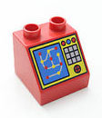

Duplo Computer
This page is very much work in progress.
|  |
|
The idea is to plan and build a working computer using Duplo track with lazy and sprung points. It would take up a large space. The actual size would depend on the number of built-in functions and the word size of each register. |
Specifications
There are a number of specifications to work out. At the moment, a minimum specification might be:
- 5 registers: A, B, Count, Input and Sum, all 4 bits in size and 6 bits for S.
- Limit of 8 Mux lines.
- Built-in functions, to allow greatest number of programs to be run:
Add, Increment, Decrement, Copy... etc - Positive integers only.
2's complement representation may be added later. If so, all registers need to be the same size and the carry in and out to the MSB (most significant bit) needs to be monitored to correctly determine overflow errors.
Some careful thought on:
- Which registers are linked together.
- Can all functions halt the program or only the comparator.
- Can functions be called from different places in the program loop.
- Ability to clear any register, or just Count and Sum registers.
Reset All
To ensure accurate and repeatable results, it is important that all points are reset to their initial positions before each new calculation. For web page layouts, it is easy to click the browsers 'reload' button.
For electro mechanical computers it is easy to interrupt the power supply and let all relays etc reset to their non energised state.
A physical Duplo train track computer is more difficult, as the lazy points rest in either position. There are three posiible solutions:
- Include a mechanical method to return each lazy point to its initial position. Possibly a gentle pneumatic or hydraulic system. As it is not used for calculating, its design specifications should not be critical.
- Add a linked lazy point to every lazy point, or every group of linked points. The train then visits each point on a grand circular tour and so resets all points before each new calculation. Requires a lot more track, points, space and time to reset.
- Use the error line, along with some modified functions, to reset registers, as shown in this 'Clear & Error' layout.
Link Limit
There is a practical limit for the number of lazy points that can be linked together. There might need to be some kind of detector which switches additional lazy points using an external power source. This reduces the mechanical strain on the train wheels, switch lever and any linking bars. There is plenty of time available to do this, as the train only moves slowly from one point to another. Therefore the design specifications of the system are not critical.
Plan
So far, the plan of action is to:
- Continue to design computational layouts. This will help show which functions and features are most useful to include.
- Convert some functions from square to hexagonal layout. Duplo sprung points have the same 'footprint' as lazy points, so some functions may end up quite different.
- Explore practical limitations of large Duplo layouts. Track pieces can move slightly, altering the effectiveness of links.
Comments to guy at cr31 dot co dot uk.